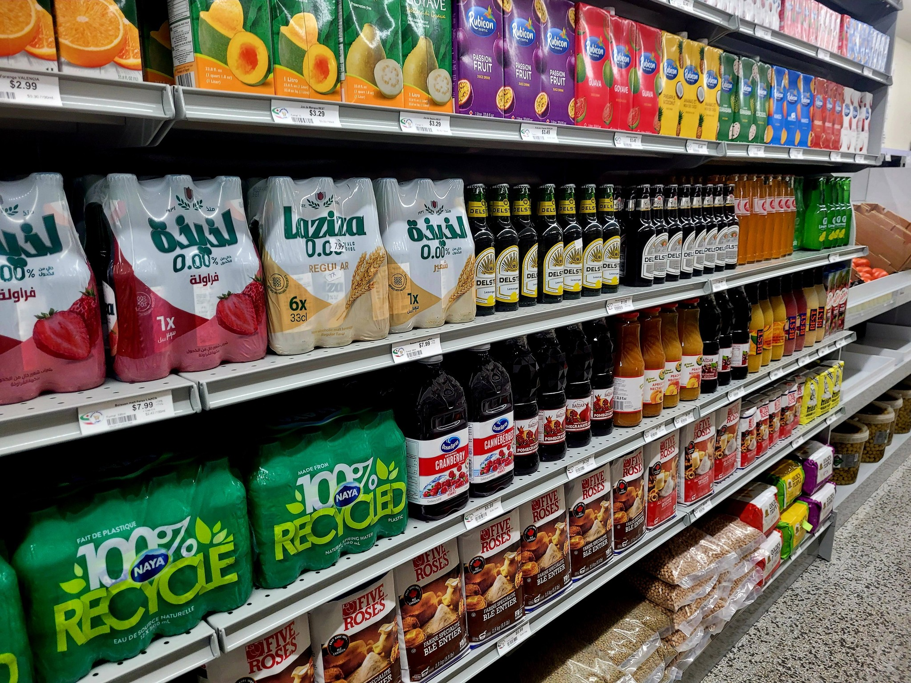

Home / Products
What we carryA full Persian pantry in 6,000 sq ft — fresh, frozen, Halal and hand-served. Everything is available in-store; browse the categories below and discover what's on our shelves.

A long refrigerated wall of fruit and vegetables, restocked every morning — including the Persian herbs and specialties that are hard to find anywhere else in the city.

Our full-service butcher cuts fresh beef, lamb and chicken every day — all certified Halal. Ask for it whole, portioned, ground or trimmed exactly how your recipe needs it.

House-marinated and ready for the grill. Pick it up on your way to a barbecue and skip the prep — the saffron and onion have already done their work.

Our open counter is the heart of the store. Taste, choose and take home exactly the amount you want — an attendant scoops it fresh for you.
Also available pre-packed if you’re in a hurry.

Aisles of basmati and Persian rice, legumes, spices, teas, jams, pickles and the dry goods every Iranian kitchen runs on — in family sizes.

Frozen sabzi & herbs, breads, fish, ready stews & pastry sheets

Barbari, lavash, sangak & taftoon — fresh and warm

Baklava, sohan, gaz, nan-e berenji & teatime treats

Doogh, sharbat syrups, teas, juices & soft drinks
We don’t sell online — and that’s on purpose. Come taste the olives, smell the herbs and let our team help you find exactly what you need.